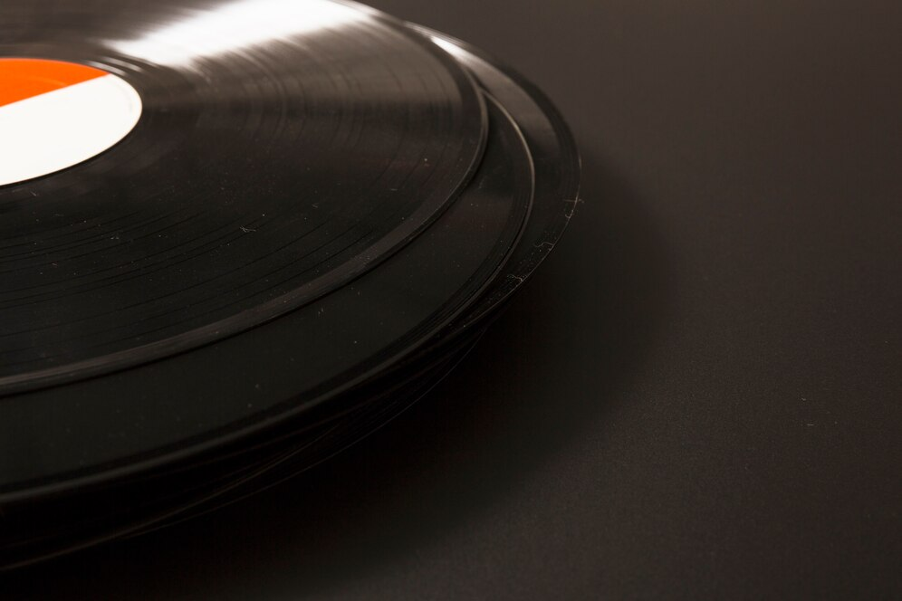
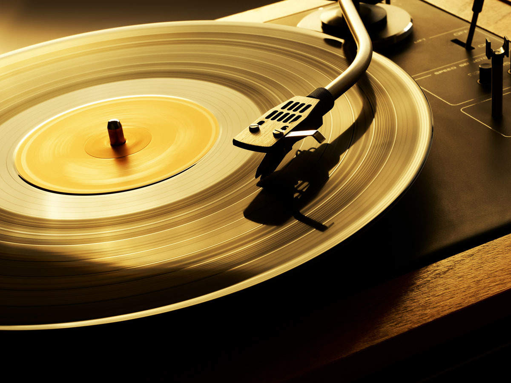

Vinyl records became popular in the 1940s, and their development has played an important role in the growth of music throughout history. In recent years, they have made a significant comeback with music lovers rediscovering the unique experience that comes with listening to a vinyl record.A vinyl record is an analogue sound storage medium, which is a flat disc made of a compound containing polyvinyl chloride (PVC). The disc then has a spiral groove pressed into its surface, which contains the audio.In order to hear the audio from the record, the disc must be placed onto a turntable and a playing stylus attached to the tone arm is placed in the groove of the disc. The record player then rotates the disc at a constant speed, and the stylus needle is made to vibrate by micro undulations along the groove of the record. A transducer converts these vibrations into electric impulses which are amplified and sent to speakers or headphones which allows the listener to hear the recorded sound.There are several different types of vinyl record with different sizes, different speeds and, as a result, different sound qualities

It was not until the 1920s that researchers began experimenting with using vinyl as a material for making the records, which were initially unsuccessful due to the technical limitations of the time. We had to wait another 20 years for Columbia Records to introduce the Long Player in 1948, which was the beginning of the popularity of vinyl. The LP quickly became the most common format for artists to record their albums onto.Vinyl records have a rich history, and their recent resurgence in popularity is a testament to the everlasting appeal, audio quality and love that people have for them. This resurgence is expected to continue and keep growing, as more music lovers both discover and rediscover the unique experience that comes with listening to music on a vinyl record. Vinyl records are also becoming more accessible, with the increase in the number of turntables that are being produced for listeners to enjoy their vinyl records on. Vinyl isn't simply for collectors and audiophiles, but for anyone that craves experiencing music in an immersive and tangible way, like no other audio format can. Vinyl is also becoming more sustainable with 100% biovinyl options now on the market which remove the fossil fuel element of the PVC Whilst streaming services may continue to dominate the industry, there has been and will always be a place for the unique experience that listening to music on vinyl offers.
title
artist
0
/
5